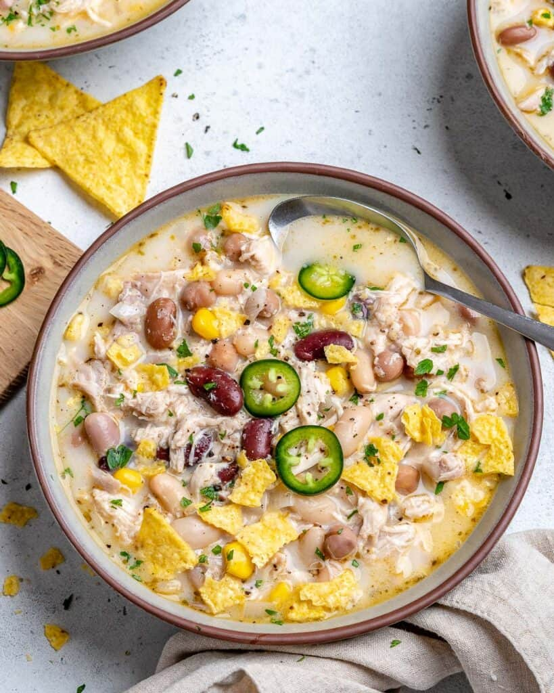
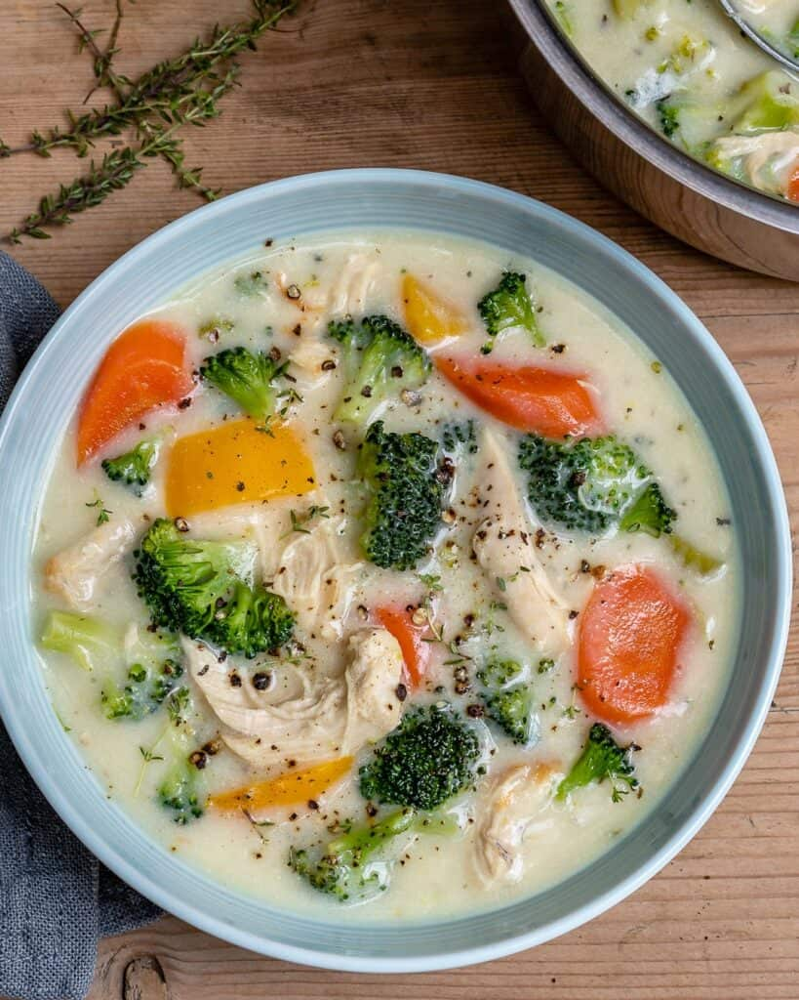
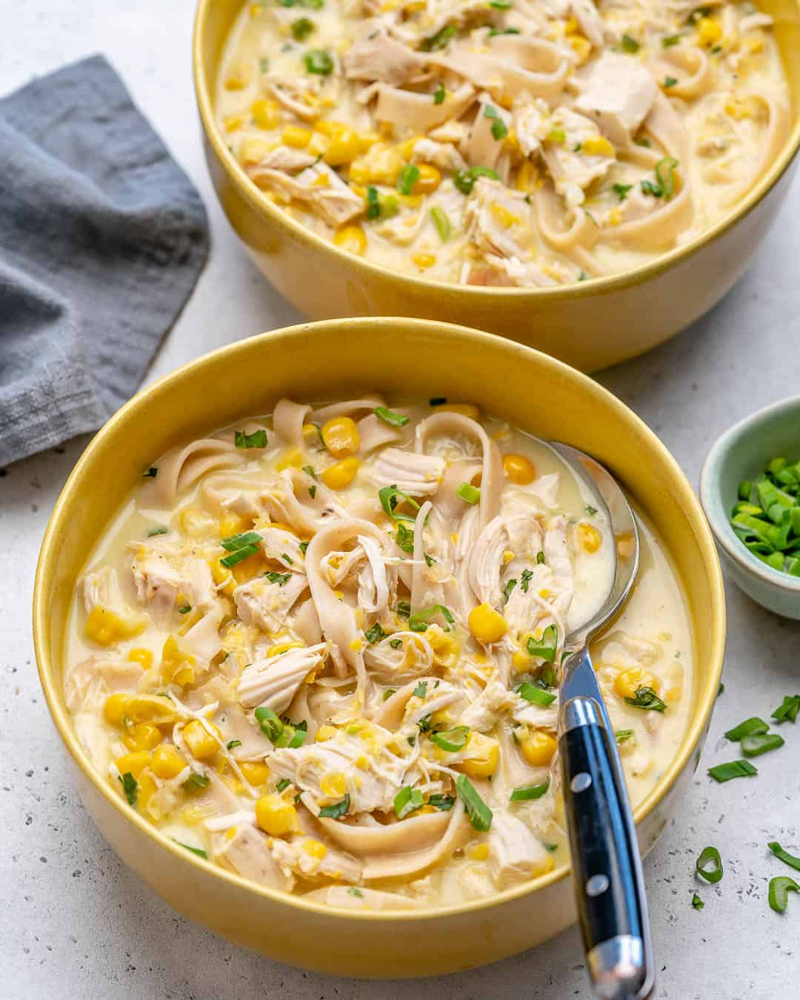
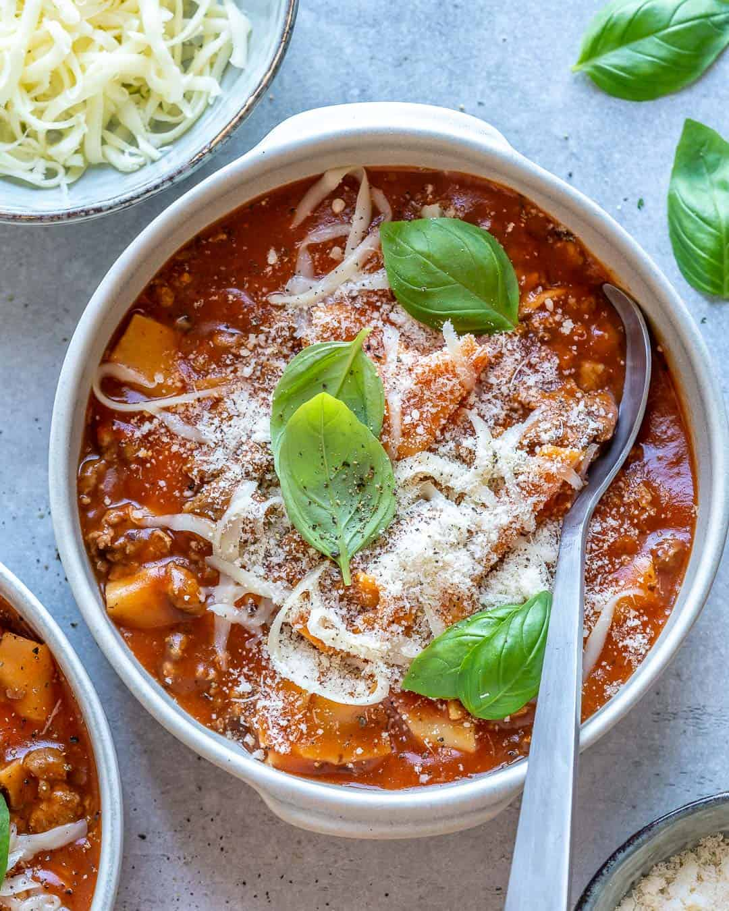

White Chicken Chili

- White Onion: or you can use yellow cooking onions.
- Garlic Cloves: fresh garlic if possible instead of garlic powder for the best flavor.
- Seasonings: Oregano, Ground Cumin, Ground Coriander Seed, Kosher salt and pepper
- Beans: White Beans: Pinto Beans, Garbanzo Beans, Red Kidney Beans.
- Shredded Rotisserie Chicken Breasts:or make your own
Creamy Chicken Broccoli Soup

- Sweet Onion: use white, yellow, or purple
- Carrots:use fresh carrots, peeled and finely diced.
- Bell Pepper: use any color
- Boneless skinless chicken breast: leaner than chicken thighs, but you may use boneless and skinless
chicken thighs.
- Milk: use milk of your choice, we used 2% milk.
Creamy Chicken Noodle Soup

- Toast, or freshly baked bread or buns
- Grilled sandwiches like grilled cheese
- Corn Bread or Biscuits
- Garlic Bread
- Grilled veggies
- A side of salad
- Crackers
One Pot Lasagna Soup

- Olive oil
- Onion
- Lean ground beef
- Garlic cloves
- Gluten-free flour
- Tomato paste
- Beef broth
- Dried lasagne sheets
- Milk
- Parmesan cheese
- Fresh basil leaves
- Fresh curly parsley
- Mozzarella cheese